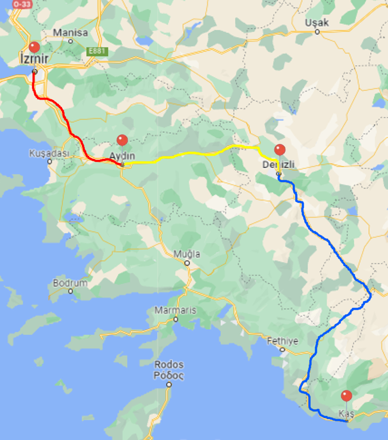
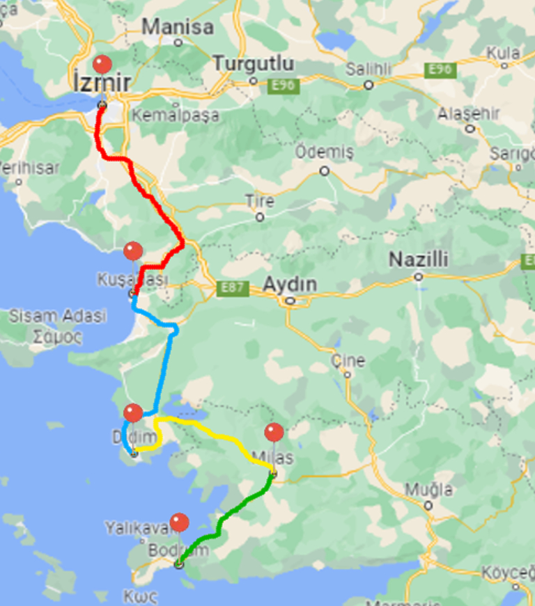
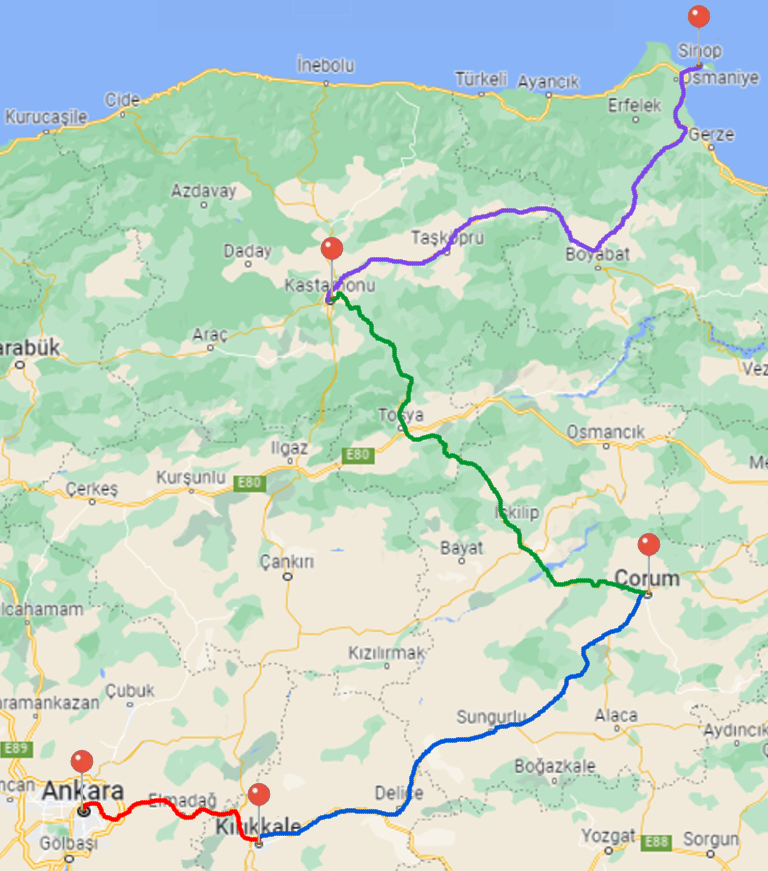
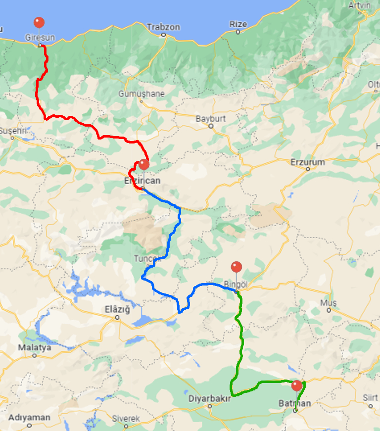

- İzmir
- Aydın
- Denizli
- Kaş
Ege - Akdeniz Gezi Rotası
Yolun toplam uzunluğu 552.35km
11 Dinlenme tesisi
Ege Böglesindeki farklı şehirlieri gezebilceğiniz kısa bir rota.

- İzmir
- Kuşadası
- Didim
- Milas
- Bodrum
Ege Gezi Rotası
Yolun toplam uzunluğu 242.22km
8 Dinlenme tesisi
Ve denizin kenarında görebilceğiniz çok sayıda doğal güzellik.

- Ankara
- Kırıkkale
- Çorum
- Kastamonu
- Sinop
Karadeniz - İç Anadolu Gezi Rotası
Yolun toplam uzunluğu 532.9km
17 Dinlenme tesisi
Başkent'ten benim memleketime birazcık uzun bir yolculuk...

- Giresun
- Erzincan
- Bingöl
- Batman
Karadeniz - Doğu Anadolu - Güney Doğu Anadolu Gezi Rotası
Yolun toplam uzunluğu 710.57km
26 Dinlenme tesisi
Karadenizden iç Anadoluya up uzun bir yolculuk